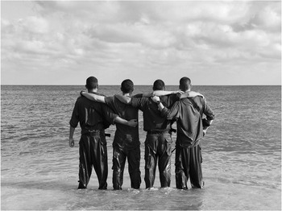

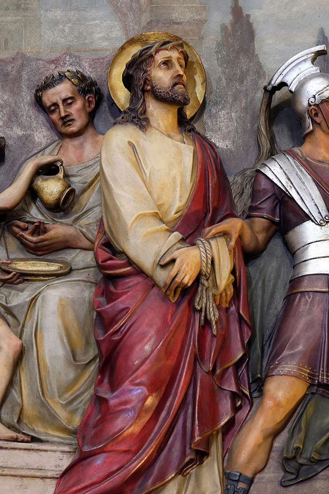
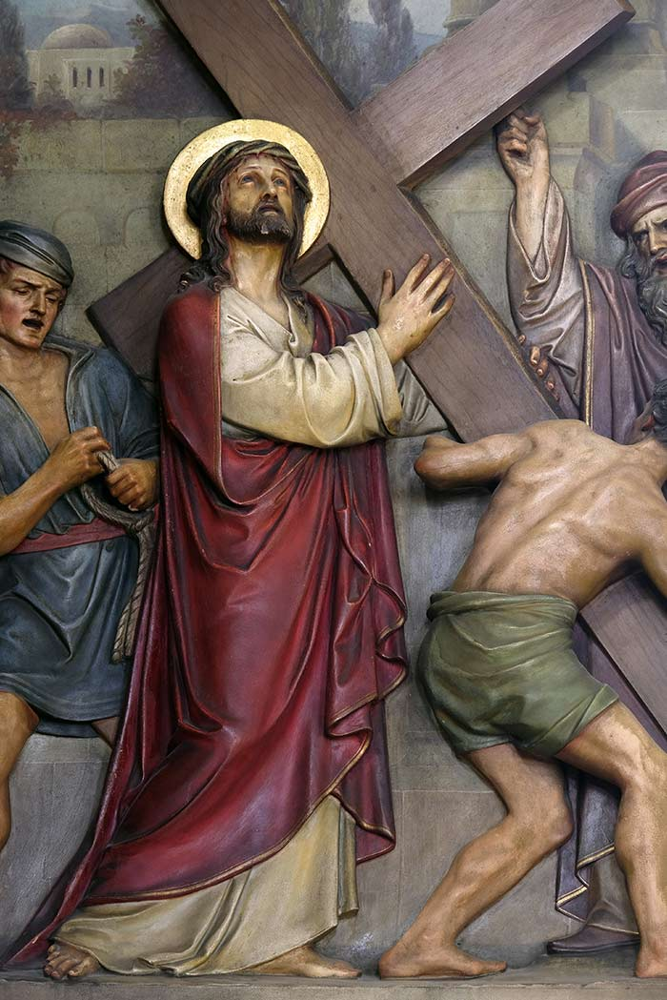
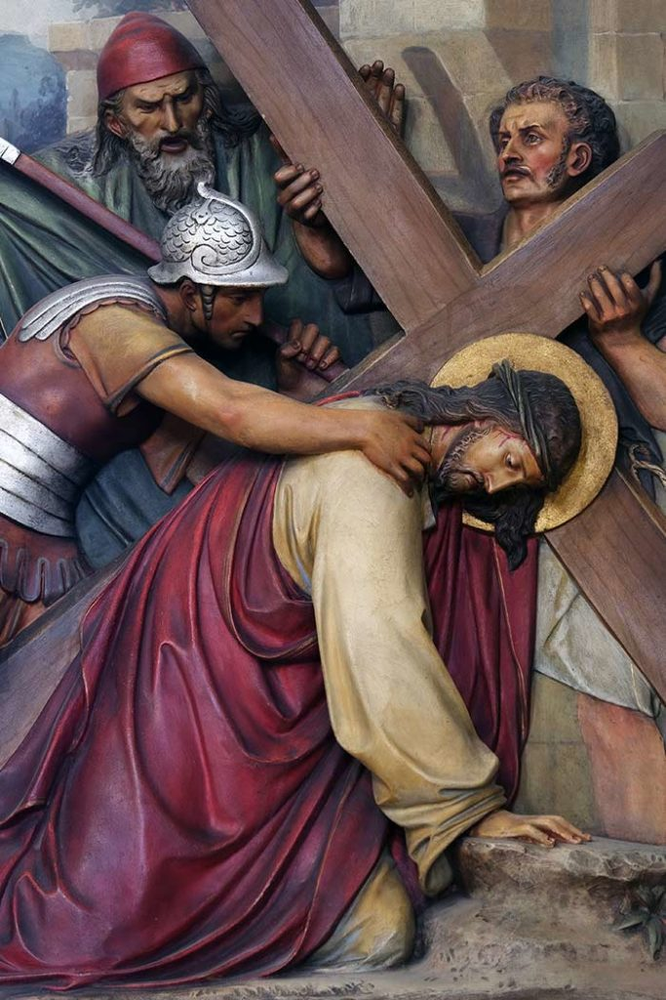
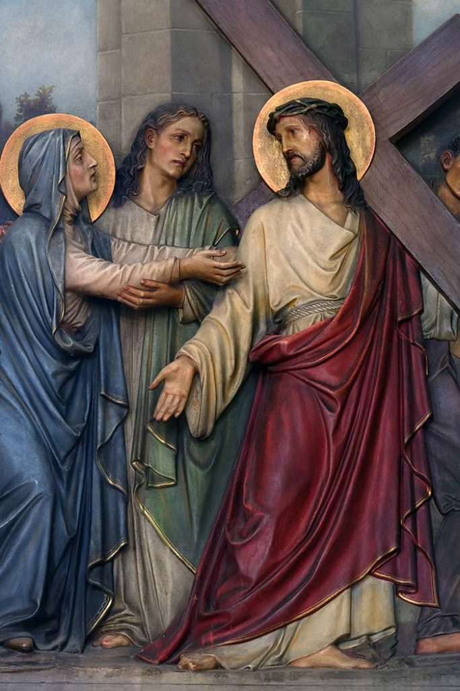
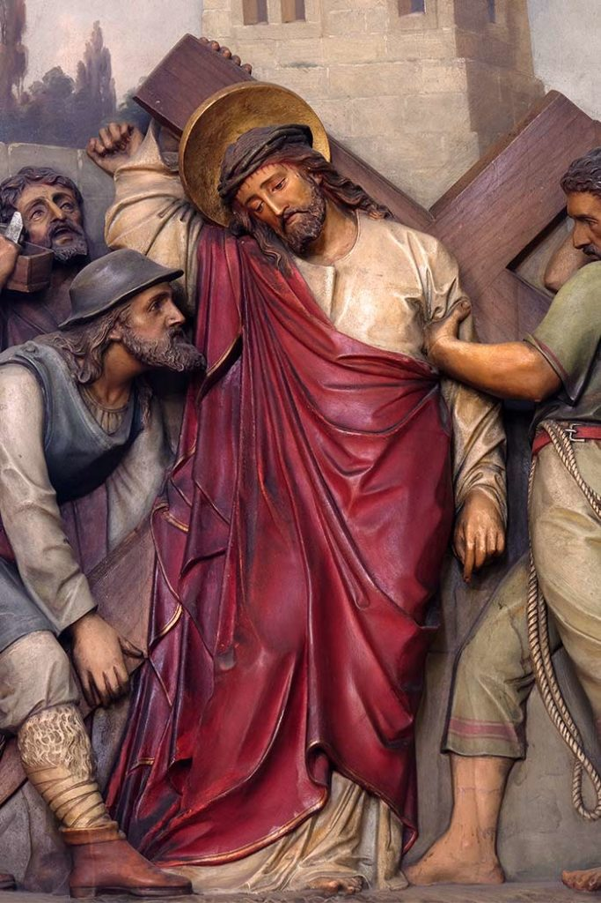
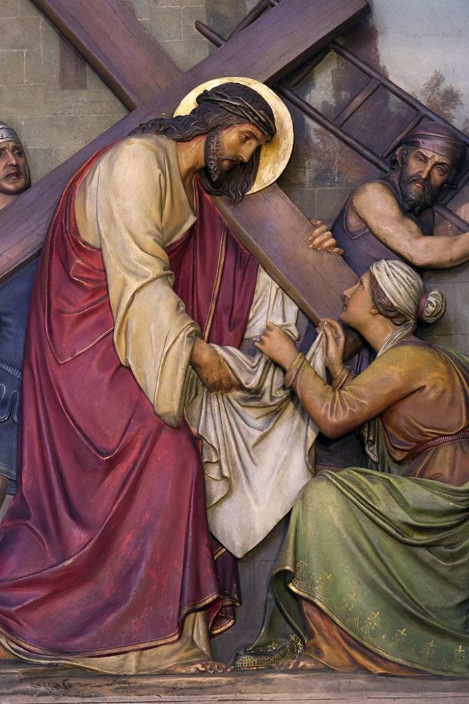
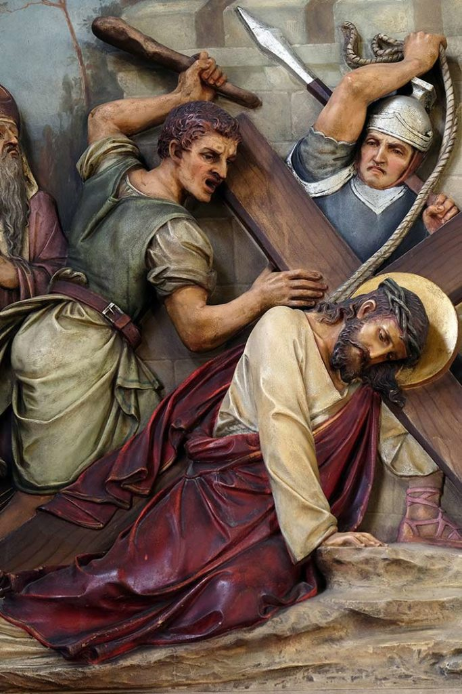
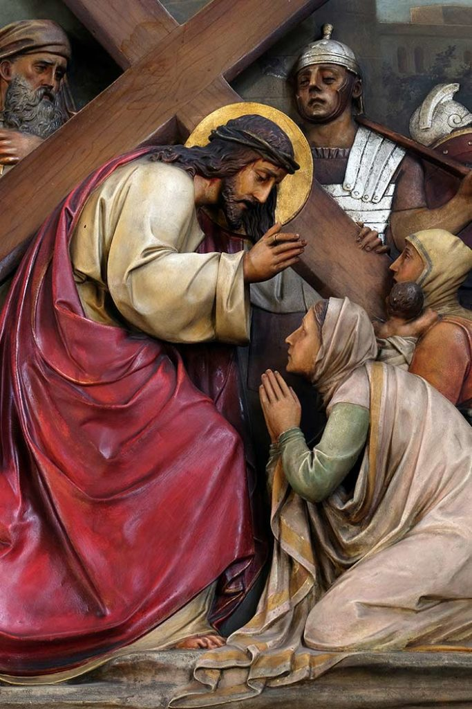
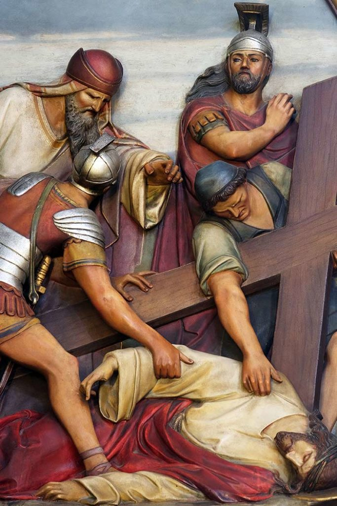
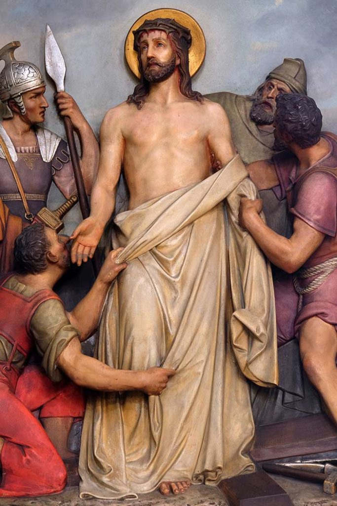
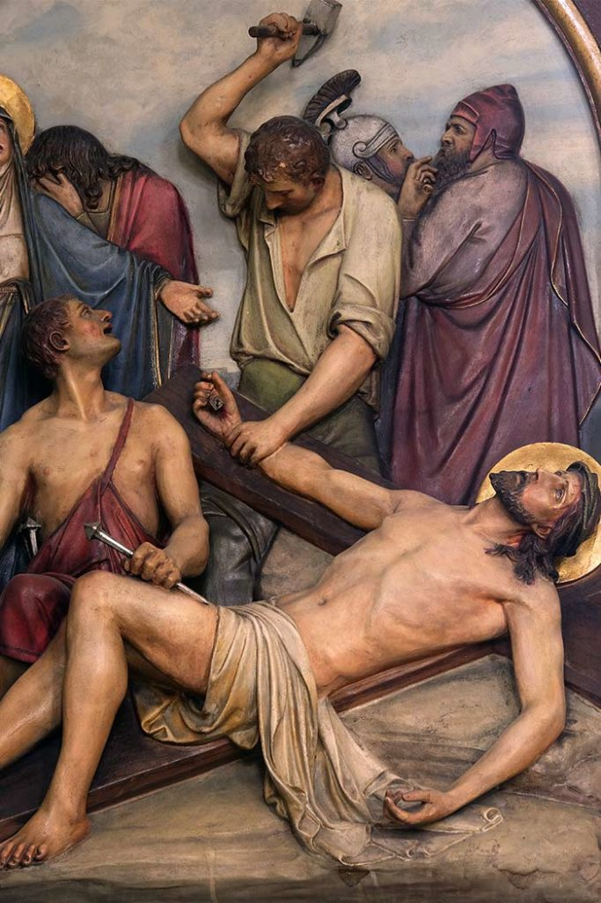
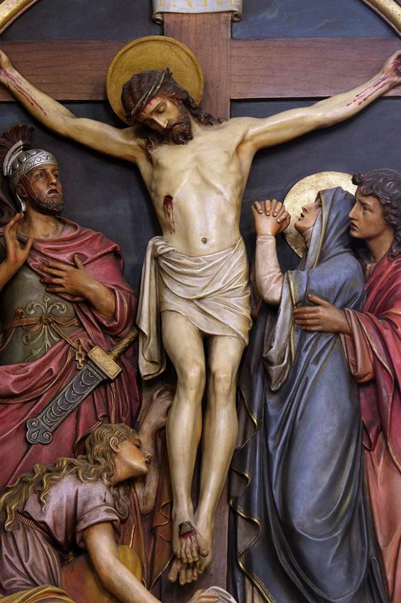
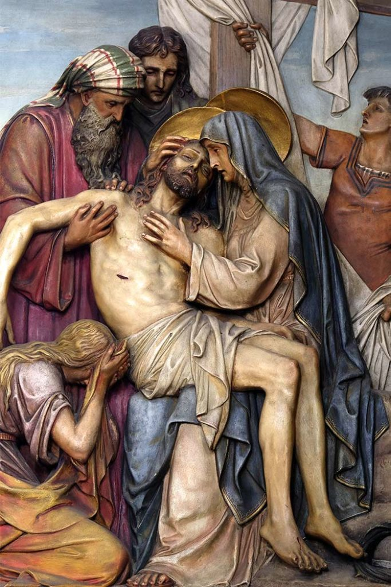
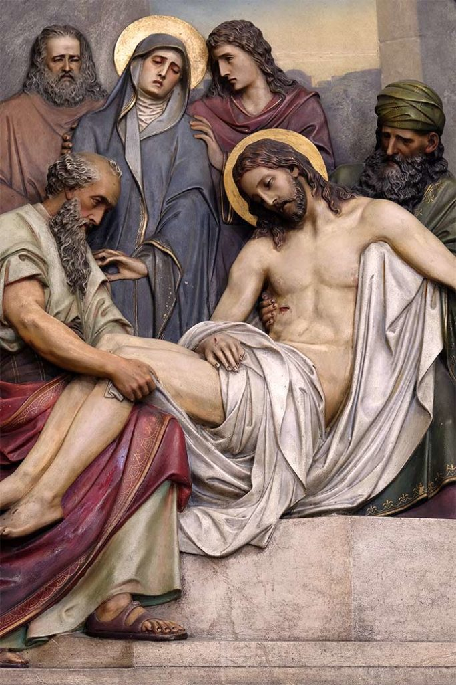
Day 1: Light created and separated from darkness (Day and Night).
Day 2: The sky/expanse created to separate waters.
Day 3: Dry land separated from seas; vegetation and trees created.
Day 4: Sun, moon, and stars created to govern day/night and mark seasons.
Day 5: Fish and birds created.
Day 6: Land animals and humans (Adam and Eve) created in God's image to rule over creation.
Day 7: God rested, blessing the day as holy.
Who am i to judge another, when i myself walk as an imperferct man
For God so loved the world, that he gave his only begotten Son, that whosoever believeth in him should not perish, but have everlasting life.

"As iron sharpens iron, so one person sharpens another" It is one of my favorite verses as this explains how we can learn from others and teach others as well
That dream was planted in your heart for a reason. Chase it. Trust GOD that he will guide you to achieve g reatness in your life
I can do all things through Christ who strengthens me.
Do not fear, for I am with you… I will strengthen you and help you.
Be strong and courageous… for the Lord your God will be with you wherever you go.
Even though I walk through the valley… I will fear no evil, for You are with me.
Let everything that has breath praise the Lord.
Blessed is the man that endureth temptation; for when he is tried, he shall receive the crown of life. which the Lord hath promised to them that love him.
For Though i fall, i will rise again though i sit in darkness, the Lord will be my light. I will not be afraid of the darkness, for the Lord is with me. He will protect me and give me strength.
My flesh and my heart may fail, but GOD is the strength of my heart and my portion forever.
Let the weak say.'I am storng.'